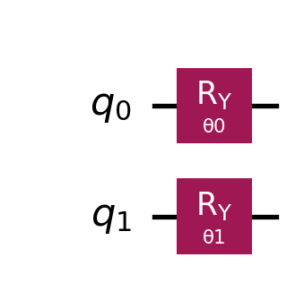

Closing the Loop: From Fixed Angles to Optimization
Turning constants into variables: How to build a parameterized quantum circuit and use classical optimization to find the minimum eigenvalue and eigenvector.
Quantum Computing
VQE
Optimization
Published
December 12, 2025
In our last post, we successfully calculated the value \(v^T A v\) for a specific vector \(v\). We manually rotated our qubits by specific angles (\(\pi/3\) and \(\pi/4\)), ran the Estimator, and verified that the result matched our classical calculation.
But in a real problem, we don’t know the answer ahead of time. We don’t know the specific angles that create the solution. We are searching for the minimum eigenvalue (\(\lambda_0\)) and its corresponding eigenvector (\(x_0\)).
To find them, we must transition from a static calculation to a dynamic optimization loop.
1. The Hybrid Loop
The quantum computer cannot “find” the minimum on its own. It is just a very expensive function evaluator. It takes a set of angles \(\vec{\theta}\) and returns a cost \(E\). The logic for how to change \(\vec{\theta}\) to lower the cost lives on the classical computer.
This creates a hybrid feedback loop:
Classical CPU: Guesses a set of parameters \(\vec{\theta}\) (e.g., \([0, 0]\)).
Quantum QPU (Estimator): Prepares the state \(|v(\vec{\theta})\rangle\) and measures the expectation value \(E = \langle v(\vec{\theta}) | A | v(\vec{\theta}) \rangle\).
Classical CPU: Looks at \(E\). Is it lower than before?
Yes: Move further in that direction.
No: Try a different direction.
Repeat until the value converges to the minimum.
2. Step A: Finding the Minimum Eigenvalue
Let’s make this concrete. We will use the exact same matrix from the previous post, but we will upgrade our circuit. Last time, we hard-coded np.pi/3. This time, we will insert a symbolic Parameter and let the optimizer find that value for us.
The Matrix (\(A\)):\[A = 0.5 (Z \otimes Z) + 0.2 (X \otimes X)\]
In Qiskit, we use Parameter objects to create algebraic variables. These are the “knobs” our classical optimizer will turn.
Code
# 1. Define the Parameterstheta_0 = Parameter('θ0')theta_1 = Parameter('θ1')# 2. Build the Circuit# Instead of fixed angles, we use the parameters.qc = QuantumCircuit(2)qc.ry(theta_0, 0) qc.ry(theta_1, 1)print("Parameterized Circuit:")display(qc.draw("mpl"))
Parameterized Circuit:

The Cost Function
We need a standard Python function that the optimizer can call. This function takes a list of numbers (the current values of \(\vec{\theta}\)) and returns a single number (the eigenvalue estimate).
Code
estimator = StatevectorEstimator()def cost_function(params):""" Input: params = [val_0, val_1] Output: Expectation Value <v(params)|A|v(params)> """# Bind the numerical values to the circuit parameters pub = (qc, hamiltonian, params)# Run the job job = estimator.run([pub]) result = job.result()[0]# Return the scalar float# We explicitly cast to float to avoid numpy array issues in scipyreturnfloat(result.data.evs)# Test it with a random guess to make sure it workstest_guess = [0.0, 0.0]print(f"Value at [0,0]: {cost_function(test_guess):.4f}")
Value at [0,0]: 0.5000
Running the Optimization
We use scipy.optimize.minimize with the COBYLA method. This is a “gradient-free” optimizer, often used in quantum computing because it handles noise better than standard gradient descent.
Success! The optimizer automatically found the angles that produce the minimum eigenvalue.
3. Step B: Retrieving the Eigenvector
We have found the minimum eigenvalue (\(\lambda_0\)), but in many applications (like data science or chemistry), we also need the eigenvector itself (\(x_0\)).
The Estimator only gives us the energy. To see the vector structure, we use the Sampler. The Sampler gives us the probability (\(P\)) of measuring each state. Since \(P = |\psi|^2\), we can reconstruct the magnitude of the state vector.
Note: The Sampler recovers the magnitude, but not the relative phases (signs). For that, we would need more complex tomography. For now, we compare the probability distributions.
Code
from qiskit.primitives import StatevectorSampler# 1. Prepare the Circuit for Samplingqc_sampled = qc.copy()qc_sampled.measure_all()# 2. Run the Sampler using the OPTIMAL anglessampler = StatevectorSampler()job_sampler = sampler.run([(qc_sampled, optimal_angles)])result_sampler = job_sampler.result()[0]# 3. Reconstruct the Vector# Get counts and convert to probabilitiescounts = result_sampler.data.meas.get_counts()total_shots =sum(counts.values())# We strictly order the states: |00>, |01>, |10>, |11>states = ['00', '01', '10', '11']# Calculate Probabilitiesprobs = np.array([counts.get(s, 0) / total_shots for s in states])# Calculate Amplitudes (Sqrt of probability)quantum_vector = np.sqrt(probs)print("Reconstructed Quantum Eigenvector:")print(quantum_vector)
Reconstructed Quantum Eigenvector:
[0. 1. 0. 0.]
4. The Reality Check: Did we fail?
We have an answer. The optimization loop converged successfully. But is it the correct answer?
Let’s verify this using standard linear algebra tools like numpy. We will construct the matrix \(A\) explicitly, diagonalize it, and find the true eigenvector.
Code
# 1. Construct the Matrix A Classically# A = 0.5*ZZ + 0.2*XXmatrix_A = np.array([ [0.5, 0, 0, 0.2], [0, -0.5, 0.2, 0 ], [0, 0.2,-0.5, 0 ], [0.2, 0, 0, 0.5]])# 2. Calculate Eigenvalues and Eigenvectorseigenvals, eigenvecs = np.linalg.eigh(matrix_A)# 3. Extract the Minimumtrue_eigenvalue = eigenvals[0]true_eigenvector = eigenvecs[:, 0]# 4. Take absolute value for comparison (ignoring phase signs)true_vector_abs = np.abs(true_eigenvector)print(f"True Minimum Eigenvalue: {true_eigenvalue:.6f}")print(f"True Eigenvector (Abs): {true_vector_abs}")print("-"*30)print(f"Quantum Value Found: {min_eigenvalue:.6f}")print(f"Quantum Vector Distance: {np.linalg.norm(quantum_vector - true_vector_abs):.6f}")
Look at the results above. 1. The Value: The quantum result is significantly higher than the true minimum. 2. The Vector: The distance is large (likely \(>0.7\)).
The code worked perfectly. The optimizer did its job. Yet, we failed to find the ground state. Why?
The answer lies in the Ansatz (the circuit structure). We constructed our circuit using only independent rotations (RY on qubit 0, RY on qubit 1).
The classical calculation reveals that the true ground state is a Bell State approximation—a maximally entangled state where the qubits are correlated.
Mathematically, a tensor product of single qubits (which is all our current circuit can produce) can never create an entangled state. We tried to fit a round peg (an entangled ground state) into a square hole (a product-state circuit).
No matter how long we run the optimizer, we will never reach the true minimum because it physically does not exist in the search space of our current circuit.
Next Steps: We have the Engine (VQE loop), but we need better Fuel. In the next post, we will break the “Product State Barrier” by introducing Entanglement and designing a Hardware Efficient Ansatz.